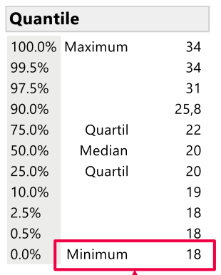
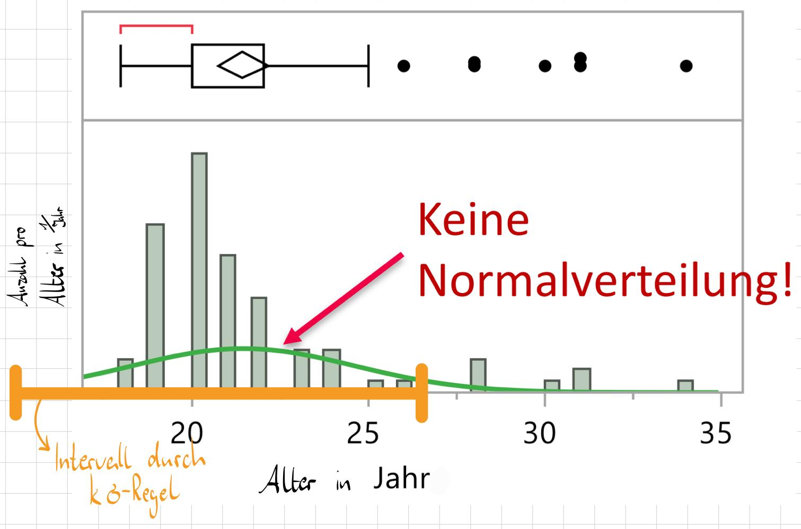
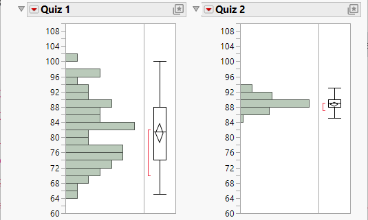
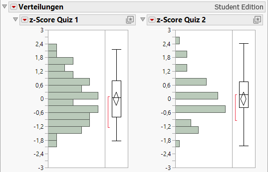
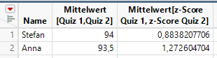

Standardnormalverteilung
1 Geschichte
Die Entwicklung der Normalverteilung war kein einzelnes Ereignis, sondern ein Prozess über mehr als 100 Jahre, an dem drei Hauptakteure beteiligt waren:
Der Entdecker (de Moivre, 1733):
Abraham de Moivre fand die “Vorform” der Kurve. Er erkannte sie als Grenzfall, wenn man Zufallsexperimente (Binomialverteilungen) sehr oft wiederholt.Der Mathematiker (Laplace, 1782 & 1810):
Pierre-Simon Laplace lieferte das mathematische Fundament. Er löste das komplizierte Integral (Ergebnis \sqrt{\pi} Gleichung 1), um die Kurve berechenbar zu machen. Später formulierte er den Zentralen Grenzwertsatz, der erklärt, warum diese Verteilung theoretisch so wichtig ist.Der Namensgeber (Gauß, 1809):
Carl Friedrich Gauß definierte die exakte Formel Gleichung 2, die wir heute nutzen, um Himmelskörper zu berechnen. Deshalb nennen wir sie heute oft “Gauß-Kurve”.Der Anwender (Quetelet, 1844):
Adolphe Quetelet brachte die Theorie in die Praxis. Er zeigte am Beispiel des Brustumfangs von Soldaten, dass sich auch biologische Merkmale normalverteilen, und begründete damit die angewandte Statistik.
2 Die Funktion
2.1 Das Gaußische Integral:
f(x) = e^{-x^2} \quad \Rightarrow \quad \int_{-\infty}^{\infty} e^{-x^2} dx = \sqrt{\pi} \tag{1}
Enthält keinen Mittelwert sowie Standardabweichung.
2.1.1 Warum PI?
2.2 Die Normalverteilung:
Auch Dichtefunktion
f(x|\mu, \sigma^2) = \frac{1}{\sqrt{2\pi\sigma^2}} \cdot e^{-\frac{(x-\mu)^2}{2\sigma^2}} \tag{2}
Ist abhängig von Mittelwert \mu und Standardabweichung(Varian) \sigma.
2.3 Fläche unter der Kurve bei Normierung:
\int_{-\infty}^{\infty} \frac{1}{\sqrt{2\pi\sigma^2}} \cdot e^{-\frac{(x-\mu)^2}{2\sigma^2}} dx = 1
Ist immer 1.
2.4 Der Spezialfall die Standardnormalverteilung:
\mu = 0, \sigma = 1 \quad \Rightarrow \quad f(x) = \frac{1}{\sqrt{2\pi}} \cdot e^{-\frac{1}{2}x^2}
3 Mittelwert und Standardabweichung
Mittelwert \mu und Standardabweichung \sigma finden sich in der gaußischen Glockenkurve wieder, indem bei x = \mu der Extrempunkt liegt, sowie bei \mu \pm \sigma der Wendepunkt ist.

3.1 Sigma-Bereiche
Darüber hinaus gibt es noch die sogenannten Sigma-Bereiche, welche einen bestimmten Anteil an Werten enthalten.
In folgenden mit ungefähren Werten:
- [\mu - \sigma; \mu + \sigma] enthält 68.27% aller Werte
- [\mu - 2\sigma; \mu + 2\sigma] enthält 95.73% aller Werte
- [\mu - 3\sigma; \mu + 3\sigma] enthält 99.73% aller Werte
- [\mu - 5\sigma; \mu + 5\sigma] enthält 99.99994% aller Werte
und umgekehrt:
- 50% aller Werte sind zwischen [\mu - 0.675\sigma; \mu + 0.675\sigma]
- 90% aller Werte sind zwischen [\mu - 1.64\sigma; \mu + 1.64\sigma]
- 95% aller Werte sind zwischen [\mu - 1.96\sigma; \mu + 1.96\sigma]
- 99% aller Werte sind zwischen [\mu - 2.58\sigma; \mu + 2.58\sigma]
Formel für allgemeine Wahrscheinlichkeit für ein Intervall:
\begin{array}{l} P(|X - \mu| \le k \cdot \sigma) & = & P(\mu - k \cdot \sigma \le X \le \mu + k \cdot \sigma) \\ & = & \int_{\mu - \sigma}^{\mu + \sigma} f(x|\mu,\sigma^2) \, dx \end{array}
Die Wahrscheinlichkeit (P), dass ein Wert X maximal k Standardabweichungen \sigma vom Mittelwert \mu entfernt liegt, ist gleich der Wahrscheinlichkeit, dass dieser im Intervall zwischen μ−kσ und μ+kσ liegt.
4 Anwendung für Häufigkeitsverteilung
Ziel:
Für welche Körpergröße muss die Sicherheitseinrichtungen in einem Auto (Sitz, Airbag, Gurt, etc.) planen, so dass die meisten Menschen (95%) bei einem Unfall geschützt werden?
Gegeben:
\begin{align*} \text{Anzahl Messwerte: } & n = 89725 \\ \text{Mittelwert: } & \mu = 171.57251cm \\ \text{Standardabweichung: } & \sigma = 9.5836457cm \end{align*}
Intervall für 95% (aus Kapitel 3.1):
\text{Für: }P(X\in I)\approx 0.95 \ \Rightarrow \ I=[\mu - 1.96\sigma; \mu + 1.96\sigma]
Einsetzen der Werte:
\begin{array}{l} I & = & [171.57251cm - 1.96\cdot 9.5836457cm; 171.57251cm + 1.96\cdot 9.5836457cm] \\ & \approx & [152.78cm; 190.34cm] \end{array}
\Rightarrow Die Sicherheitseinrichtungen müssen für Menschen mit der Größe von 152.78cm bis 19.34cm eingeplant werden.
4.1 Warnung bei schiefer Verteilung
Beispiel: Welches Alter haben die meisten Studierenden (95%) in der Vorlesung?
Gegeben:
\begin{align*} \text{Anzahl Messwerte: } & n = 81 \\ \text{Mittelwert: } & \mu = 21.45679 \text{ Jahre} \\ \text{Standardabweichung: } & \sigma = 3.1545577 \text{ Jahre} \end{align*}
Einfügen:
\begin{array}{l} I& = & [\mu \pm 1.96\sigma]\\ & \approx & [21.46 \text{ Jahre} \pm 1.96 \cdot 3.15 \text{ Jahre}] \\ & \approx & [15.27 \text{ Jahre}; 27.63 \text{ Jahre}] \end{array}
\Rightarrow Laut Sigmaregel soll das Mindestalter 15.27 Jahre sein, was jedoch auch nicht stimmt, wenn man sich die Quantillen anschaut:

Das Problem wird durch Blick auf die Verteilung im Histogram zusammen mit der Formel für die Normalverteilung sichtbar.

Mit folgender Dichteformel:
f(x|27.46Y, 3.25Y^2) = \frac{1}{\sqrt{2\pi\cdot 3.25Y^2}} \cdot e^{-\frac{(x-27.46 Y)^2}{2\cdot3.25Y^2}}
5 Z-Transformation
Die Z-Transformation ist eine Methode zur Standardisierung einer beliebigen normalverteilten Variable. Dies ist zB. wichtig für Vergleiche von Werten, die aus unterschiedlichen Verteilungen stammen.
Z_i = \frac{X_i - \mu}{\sigma}
Z_i gibt also des Score eines Wertes von einer Verteilung.
Die Menge an Z_i nennt sich dann die Standardnormalverteilung, für dies gilt:
Mittelwert: \mu = 0
Standartabweidung: \sigma = 1
5.1 Beispiel
5.1.1 Pub Quiz
Dazu referenzierte Tabelle: Pub_Quiz.jmp
Die Punktzahl aus zwei verschiedenen Quizrunden sollen verglichen werden, jedoch soll die Schwierigkeit der Runde mit einbezogen werden.

Wie zu sehen ist, war die zweite Runde deutlich einfacher, da dort fast jeder genauso viel Punkte hat.
Um dies auszugleichen führt man bei jeden Wert ein z-Transformation aus. Hierzu die oben gezeigte Formel anwenden: Den Wert X_i vom Mittelwert \mu abziehen und durch die Standardabweichung \sigma teilen.
Durch die z-Tansformation lässt sich nun, die Verteilung der Punkte zwischen den verschieden, schweren Runden besser Vergleichen:

Beispielsweise kann durch berechnen der Mittelwerte, der beiden z-Scores, der wirklich bessere Spieler unter Berücksichtigung des Schwierigkeitsgrades ermittelt werden:

5.1.2 Verteilung der Größe Deutschland
Geben Sie zu einer N(171.55cm, (9.55cm)^2) verteilten Größe Zufallsgröße das um den Erwartungswert symmetrische Intervall an, welches eine Wahrscheinlichkeit von 0,95 hat.
Gegeben
Die Normalverteilung mit:
\text{Groesse} \sim N(\mu, \sigma) = N(171.55cm, (9.55cm)^2)
Die Tabelle zur Standardnormalverteilung
\begin{array}{l} Z_{0.975} = 1.96 \\ Z_{0.025} = -Z_{0.975} = -1.96 \end{array}
Gesucht
Zwischen welchen Größen liegt der Großteil (95%) aller Deutschen?
Bzw.:
P(|X - 171.55cm| \le 1.96 \cdot 9.55cm) = 0.95
Anwendung der Z-Trasnformationsformel:
Z_i = \frac{X_i - \mu}{\sigma} \Leftrightarrow X_i = \mu + Z_i \cdot \sigma
\begin{array}{l} x_{0.975} & = & 171.55cm + 1.96 \cdot 9.55cm \\ & = & 190.27cm \\ x_{0.025} & = & 171.55cm - 1.96 \cdot 9.55cm \\ & = & 152.83cm \\ \end{array}
Der Großteil (95%) aller Deutschen liegt zwischen den Werten: 152.83 cm und 190.27cm.
5.1.3 Weiteres Beispiel
Wird nicht weiter ausgeführt, siehe hierzu: